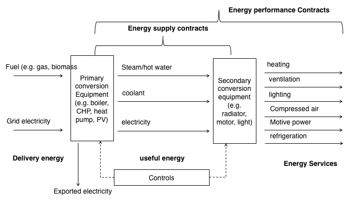
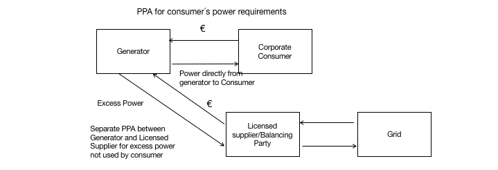
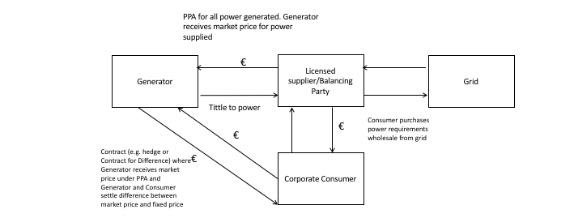

Chapter 4 Energy Contracts
4.1 Basic Concepts
When dealing with Energy Services, some of the main challenges are:
Challenges in energy efficiency - Most organisations (building owners) don´t have the initial capital upfront to invest in Energy Efficiency measures;
No capital for investment - Banks are not specialised in this type of investment or, able to make an offer alone;
Difficulty to get bank loans - It´s a regulated market with technical certification needed, so out of the scope of the usual business of usual lenders;
Technical complexity - Technical and complex deal structure, with several entities; and
No standard contracts - The insistence of a real standard Contract across countries or even within the same jurisdiction.
Most contracts are designed to answer a specific need or problem.
When we refer to a contract, on a very simples terms we mean:
An agreement with specific terms between two or more persons or entities in which there is a promise to do something in return for a valuable benefit (or consideration, in common law)
The existence of a contract requires finding the following factual elements:
an offer;
an acceptance of that offer which results in a meeting of the minds (also referred to as “the mirror image rule”);
a promise to perform;
a valuable consideration (which can be a promise or payment in some form);
a time or event when performance must be made (or also referred to as meet commitments);
the terms and conditions for performance, including fulfilling promises;
performance, and
an intention to affect legal obligations (so we are excluding what doctrine refers to “not a serious proposal” too)
Depending on how the deal is structured, performance and its payment can be designed differently. Usually are dragged along the whole term of the contract (not a single performance and payment), namely if there are several instalments instead of a single payment or, it´s a recurrent service.
4.1.0.1 Contract elements
Performance
Payment
Exchange (product /service) for a
Price
Terms and conditions
 The total energy used (not useful) can be expressed as to how we use energy services, or secondary conversation that concerts to heating, ventilation, lighting and so on.
Bear in mind, that energy supply and energy performance are not equivalents. Contracting a certain amount of energy and end use are not equals. Besides losses with secondary conversion, the first is related to a commodity (or raw material you buy to generate a certain output), the last to the end result.
The same amount of energy may give the same thermal comfort, or not, for example.
Energy contracts
Energy Supply Contract
Energy Services Agreement (ESA)
Power Purchase Agreement (PPA)
Energy Performance Contract (EPC)
Energy Management Contract (EMC)
Finally, to have a Contract you need, at least two persons or entities.
The Energy Efficiency Directive (EED) defines an ‘energy service provider’ as a “natural or legal person who delivers energy services or other energy efficiency improvement measures in a final customer’s facility or premises”.
They can be (alone or jointly):
Utilities;
Equipment manufacture/supplier;
Supplier Manufacturer of building automation and control systems
Facility management and operation company
Consulting/engineering firm
Independent specialist (focused on Energy efficiency services);
Energy Data Companies;
Governmental entities (namely under subsidized schemes)
Banks and other Financial institutions (as intermediaries for EE related type of investments) and
Others.
In a raw sense, you should understand that entity will not define the contract, meaning that an EPC will be an EPC, regardless if it is specially used by one type of Entity (a typical example of EE contracts with the Public Sector). Also, you can have a variety of entities so understanding the responsibility, strengths and weaknesses and governance among them is an important matter.
The Energy Efficiency Directive (EED) defines an ‘energy service provider’ as a “natural or legal person who delivers energy services or other energy efficiency improvement measures in a final customer’s facility or premises”.
4.2 Energy Services Contracts (ESA´s)
An Energy Service Agreement or Contract its use with a large range of scopes.
As it is defined by Lay and Sorrell, Energy service contracts have been variously defined and categorised in relation to the nature of the energy services covered such as:
the source of finance for new investment;
the ownership of the relevant assets;
the provision of guarantees for savings in energy; consumption and/or costs and;
the degree to which control of energy services together with the associated risks is transferred to the contractor.
Various definitions of energy service contracting have been proposed, but few satisfactorily describe the diversity of contractual arrangements that are available or the range of activities involved.
There is little consensus on which combination of these distinguishes energy service contracts from more conventional (namely under one single market supplier, or a monopoly) or market relationships (as energy/fuel supply Contracts under liberalised market).
Terminology use varies from one country to another, reflecting Financial and Fiscal schemes which aim to promote EE measures and, as a result, the types of contract change in line with those policies.
There are several configurations of energy services contracts, most specific to each country.
To name a few, so you can analyse the range of contractual terms that can be under the “energy service Contract”´ terminology.
“Delivery Contracting” - also known as Supply Contracting or Energy Supply Contracting (ESC) - is focused on the supply of a set of energy services (such as heating, lighting, motive power, etc.) mainly via outsourcing the energy supply.
Chauffage, one of the most common contract types in Europe besides EPC, is a form of Delivery Contracting. In a chauffage arrangement, the fee for the services is normally calculated based on the client’s existing energy bill minus a certain level of (monetary) savings, with a guarantee of the service provided. Alternatively, the customer may pay a rate, for instance, per square meter. The ESCO (or ESPC) may also take over the purchase of fuel and electricity.
A Contract Energy Management (CEM), which means “the managing of some aspects of a client’s energy use under a contract that transfers some of the risk from the client to the contractor (usually based on providing agreed ‘service’ levels)”
“comfort contracting” In the Nordic countries/Scandinavia, contracts similar to Delivery Contracting are referred to as “comfort contracting”, and in these contracts, the provision of the level of comfort or level of service is outsourced to the ESCO firm. These contracts will go beyond the provision of energy for the level of comfort and take care of full maintenance, including a healthy indoor environment, aesthetics, etc.
“heat supply contracts” In Italy, “chauffage”, or “heat supply contracts” (“Servizio Calore”, in Italian). These are however substituted by the stricter “Energy Service Plus contracts” (“Servizio Energia plus”), which also includes a commitment by the provider to reduce the consumption of primary energy for winter heating by at least 10% with respect to what is indicated in the building certificate. Furthermore, it commits to the installation of a temperature control system, when possible.
A BOOT model involves an ESCO designing, building, financing, owning and operating the equipment for a defined period of time and then transferring this ownership across to the client. This model resembles a special purpose enterprise created for a particular project. Clients enter into long-term supply contracts with the BOOT operator and are charged accordingly for the service delivered; the service charge includes capital and operating cost recovery and project profit.
Integrated Energy Contracting (IEC) is a new model, which combines “Engineering, Procurement, and Construction” (EPC) Contract and Delivery Contracting and thus increase the amount of energy cost savings. When designing the project, demand-side measures are planned as a priority, and the remaining level of energy needs are covered by more energy efficient supply, when possible. Therefore an IEC combines the benefits of the demand and supply side measures, there forereaching a higher cost-benefit. At the same time, the contract is simpler than a normal EPC, which also reduces expenses.
Utility energy service Contracts (UESC) were initially Authorized by the Energy Policy Act. A utility energy service contract (UESC) is a limited-source contract between a federal agency and its serving utility for energy- and water-efficiency improvements and demand-reduction services.
Energy Savings Performance Contracts (ESPCs), also known as Energy Performance Contracts (EPC), originally from the US, are an alternative financing mechanism designed to accelerate investment in cost-effective energy conservation measures in existing Federal buildings. The Energy Policy Act of 1992 (EPACT 1992) authorised Federal agencies to use private sector financing to implement energy conservation methods and energy efficiency technologies. An ESPC is a partnership between a Federal agency and an energy service company (ESCO). The ESCO conducts a comprehensive energy audit for the Federal facility and identifies improvements to save energy. In consultation with the Federal agency, the ESCO designs and constructs a project that meets the agency’s needs and arranges the necessary financing. The ESCO guarantees that the improvements will generate energy cost savings sufficient to pay for the project over the term of the contract. After the contract ends, all additional cost savings accrue to the agency.
The Energy Services Agreement services offer may be, alone or as a combination of:
Energy analysis and audits;
Project identification and appraisal;
Project design and implementation
Energy management
Property/facility management
Monitoring and evaluation of savings
Maintenance and operation
Equipment supply
Provision of services (space heating/cooling, lighting, etc.).
Fuel or electricity supply
Project financing and
Others.
Depending on the final setup, the contractual terms offered may be presented as:
Project financing;
Delivery contracting;
BOOT (Building-Own-Operate-Transfer);
Guarantee of performance;
Shared savings (EPC) or
Guaranteed savings (EPC)
Insurance coverage (insurance policy against events that can imply financial penalties for the ESCO) and
Others.
You can think of a set of services, products, including construction being provided by one or more entities under a certain contractual arrangement. This combination depends on your needs, your present and future resources, as income and the final agreed structure.
We are going to cover some of the most relevant issues covered by the terms of an energy service contract.
Remember that most of the times are contracts with a long period of time, so its term may be subjected to several changes or events during the period of the contract.
When we refer to new equipment (for example, new heating or cooling system, PV system) that needs to be installed you should be aware of:
Specification, selection, cost, responsibility for installation and commissioning
Depending on the terms offered, this equipment can be owned by the beneficiary of such EE measures or not.
When referring “Equipment ownership” and along with it comes the definition of rights during and after contract, buyback provisions
As an example, you need a car to get to work. You either decide to buy one. If you don´t have enough capital to pay upfront, you can either ask for a loan (but the car it´s yours, so as the risk) or, you can make a leasing contract, where you can use the car, but the ownership of the car remains in the leasing company. At the end of the leasing Contract, you can buy the car for a residual price or not.
Maintenance, means who is accountable for monitoring and maintenance a certain equipment if it’s a shared responsibility of not. You may have two sets of maintenance duties: preventive and corrective.
Operation, or who is responsible for operating or how coordination is defined
Performance and quality standards - May range from pressure and temperature in the case of steam supply to complex mix of comfort standards in the case of building energy services (e.g. temperature, lighting levels, air exchange, user control)
Reliability standards - Maximum downtime, provisions for immediate and backup service in the event of malfunction
Service standards - Acceptable parameters for temperature, lighting, air exchange and other factors
Monitoring and verification - Methods for monitoring and verifying energy provision, consumption and savings, including the use of standardised protocols
Calculation of cost savings - Baseline energy consumption and operating conditions, assumptions, formulas, adjustment protocols
Pricing and payment provisions - Fixed and variable components of pricing, guarantees to the client, division of savings
Adjustment to external changes - Adjustment to inflation, changes in energy prices and other factors
Provisions for early termination - Buyout provisions, compensation, equipment removal provisions, restoration of facility
Other - Insurance, dispute resolution, penalties for contract breach, force majeure, etc.
As you already may notice, monitoring plays a central role in an energy service Contract, besides typical issues related to equipment installation, bear in mind that the premise to install new equipment relies on the promise of future savings.
Usually, most disputes are related to the fulfillment , or not, that a certain service, was executed in accordance with the agreed terms, or usually disputes emerge on clauses related to how payments and saving are calculated, if a certain service was provided within a certain quality standard, if something needs to be repaired or replaced, who has the duty to repair, replace (and pay).. and so on.
4.2.1 Further references
ESCO´s database (JCR) https://e3p.jrc.ec.europa.eu/communities/energy-service-companies
European Energy Efficiency Platform https://e3p.jrc.ec.europa.eu/
4.3 Energy Performance Contract (EPC)
An ‘energy performance contracting’ means a contractual arrangement between the beneficiary and the provider of an energy efficiency improvement measure, verified and monitored during the whole term of the contract, where investments (work, supply or service) in that measure are paid for in relation to a contractually agreed level of energy efficiency improvement or other agreed energy performance criterion, such as financial savings;”
The EPC proposal can be designed as follows:
Baseline Energy Costs its done to access investment need to implement EE measures.
After implementation of such measure the company will pay less energy cost, but has to pay back the ESE company pack, at least until refunded the initial investment;
Depending on the terms, these savings may be guaranteed or shared;
After the term of the contract, the company will still benefit from such measures but will save the whole saved energy costs.
So when looking at the Contract Lifecycle, starting from left to right:
Contract Lifecycle
There is an initial assessment or audit; then
A proposal with the Energy Efficiency Measures, Savings and General terms;
An acceptance of such offer; (or not, and goes back to the proposal until you are satisfied with an offer); then the
Investment and Implementation and lastly;
Operation and Maintenance of the Energy Efficiency measures.
One of the most critical features, when analysing such proposals is to understand if it is:
Is a Guarantee performance or best efforts to get a certain performance?
The first, guarantees, the last just makes a promise to make the best efforts. It may sound like the same things but is not. The promise on the first carries more certainty and commitment
Depending on the contractual terms it may have:
- Shared Savings and the risk and benefit of such saving is spit among the parties,
Assessment or results (or Monitoring and verification) plays a central role in this type of contract because completion and fulfilment of a certain performance rely on Monitoring and verification.
Industry uses international standards to define what “Guarantee of energy efficiency improvement” is.
In the EN 15900:2010 define as ”commitment of the service provider to achieve a quantified energy efficiency improvement”.
The European standard EN 15900:2010 defines energy efficiency services (EES) as an agreed task or tasks designed to lead to an energy efficiency improvement and other agreed performance criteria.
According to EN 15900:2010 EES shall include an energy audit (identification and selection of actions) as well as the implementation of actions and the measurement and verification of energy savings. A documented description of the proposed or agreed framework for the actions and the follow-up procedure shall be provided. The improvement of energy efficiency shall be measured and verified over a contractually defined period of time through contractually agreed methods. A core element of each EES is thus an energy efficiency improvement (EEI) action, which is any action that directly leads to a reduction in energy consumption. EEI actions may be the substitution of technology, improvement of technology, better use of technology, and behavioural change.
Like most of the Typical Energy services Contracts, the Terms and Conditions of an EPC are quite similar.
An EPC usually carries:
- Investment (also referred to as CAPEX) + O&M (usually there is some bundling, depending on the amortisation of the CAPEX during O&M);
Or you can think of a typical Engineering and construction Contract with a Services Contract to perform O&M.
Regarding the overall EPC (you should be aware of who is carrying the risk, usually falls into who has the ownership of such investment);
Are usually defined as well:
Guarantees and Maintenance (i.e. if are included or not, etc.);
Savings (results or best efforts?) - saving: kWh or final bill or, a combination of those?
Verification and Audits (initial assessment and during the contract);
Payments (how there are calculated, due dates, etc.);
Provisions and scenarios that should be considered when designing the EPC ( or do the national legal system has a solution to these and some provisions should be added to the agreement) like:
Changes (from initial assessment), of energy source, supplier, etc.;
Price change (namely under liberalized market) and dynamic pricing (it can also be a form of savings, namely financial ones)
Base scenario change: i.e. machinery, higher consumption. (long duration (due to a big payback time, around 5-8 years, you may want to considerer);
Change of ownership (in Portugal, this type may be obligations “propter rem”, meaning that they are attached to the asset, not the person. If someone sells the asset, for example, a house, the debts may stay with it (for example due condominium bills..);
Change of circumstances (usually there is some price increase, annually, according to some Price Index, still if i.e. electricity prices increase more than what could be expected, depending on jurisdiction parties may have to right to change pricing (i.e. for consumer, the supplier may have a right to unilaterally change pricing but has to give the right to step out too. This could impact the savings´ calculation or other terms that use this variable;
Inclusions and exclusions (as. maximum number of support hours, replacements (for example, something is damaged and needs replacement);
Integration with different suppliers (i.e. gas and electricity);
Authorizations (passive or active management) – that could be in the form of a mandate to act on behalf of the final client, for example, to negotiate energy supply contracts)
Controls and minimum services (what are the minimum services, for example in case of interruption of services (not related to energy supply), time to reestablish services, penalties, etc.);
Breach of contract (remedies)
Early Termination (of the contract)
Other duties: as confidentially (may follow into “sensitive data” category, if you are dealing with households and using consumption profiles, you also have to be aware of that historical data of end users, has special duties and obligations)
You also have the typical Events of Default, similar to an energy service contract such as:
Typical Events of Default:
Failure to make payments;
Failure to maintain credit support;
Breach of reps and warranties (usually subject to materiality);
Breach of transfer/change of control restrictions;
Other material breaches of obligations;
Where there are Notices and opportunity to cure remediable breaches and Typical remedies can range from :
Actual damages, subject to mitigation and capped
Termination
Termination payment
Step-In-Rights for lenders in case of a default event
4.3.1 Templates and Models
Energy Performance Contract (EPC): contract guidance note and model contract (UK) https://www.gov.uk/government/publications/energy-performance-contract-epc
Model Documents for an Energy Savings Performance Contract Project (DOE/US) https://energy.gov/eere/slsc/model-documents-energy-savings-performance-contract-project
Model Energy Savings Performance Contract, Schedules, and Exhibits (DOE/US) https://energy.gov/eere/slsc/downloads/model-energy-savings-performance-contract-schedules-and-exhibits
Other
JCR Europe https://e3p.jrc.ec.europa.eu/articles/energy-performance-contracting
4.4 Power Purchase Agreement (PPA´s)
A power purchase agreement (PPA), or electricity power agreement, is a contract between two parties, one which generates electricity (the seller) and one which is looking to purchase electricity (the buyer). The PPA defines all of the commercial terms for the sale of electricity - it can be fixed, indexed or “shaped”- between the two parties, including when the project will begin commercial operation, the schedule for delivery of electricity, penalties for under delivery, payment terms, and termination. A PPA is the principal agreement that defines the revenue and credit quality of a generating project and is thus a key instrument of project finance.
This differs from the traditional approach of simply buying electricity from licensed electricity suppliers, often known as utility (or wholesale) PPAs. PPA also is a way of choosing a certain type of energy, the most common example, if a company wants to achieve a certain percentage of renewables (or decrease its carbon footprint) to either improve overall rating of its assets (from real estate to overall company), doing a PPA with solar or wind farm is a way to achieve that goal.
There are several Business Models Involving PPAs We can have:
On-site sale
Direct sale to customer on site (shopping centres, commercial centres, manufacturing industry, airports, ports etc.)
Saves costs related to the use of the transmission grid (transmission, distribution, dispatching, general costs of system)
Sale through the grid
Utility scale ground-mounted plants;
Sale to energy utilities (peak load purchases, renewable energy source obligations);
Sale to end users (large industrial clients);
Sale to wholesalers or “aggregators”;
There are several Power Purchase Agreement structures, namely:
4.4.0.0.1 Wholesale PPA
The most simple PPA is the “Wholesale model”, where the generator sells all power supplied back to the grid. Most of the RES was implemented using this structure, where licenses were auctioned to generate a certain amount of energy in exchange for a certain predefined tariff per MWh.
4.4.0.0.2 Onsite direct wire PPA
 Not all PPA are wholesale PPA´s, and increasingly we see more often onsite private wire PPA´s. Instead of selling all back to the grid, namely activities that are energy intensive, as running servers of a company, or, they want to improve the % of RES in their overall energy mix, they can have power directly from generator to them and, a separate PPA, for either the excess power produced or as a last resort supplier.
4.4.0.0.3 Sleeved off-site PPA
In a Sleeved PPA, all power generated is sold by the corporate consumer to the licensed supplier – or balancing party – still is a Back to back PPA – Electricity Supplier purchases all power purchased by the consumer. Consumer repurchases power it uses (performing balancing function).
4.4.0.0.4 Synthetic PPA
 A Synthetic PPA or, also referred as to a “Virtual PPA” is a Contract (e.g. hedge or Contract for Difference) where Generator receives market price under PPA and Generator and Consumer settle the difference between market price and fixed price. It is virtual, because there is no physical purchased of electricity, like most Contract for Difference. If you already looked to commodities trading (as brent, for example), you see that most have “financial settlement and not a physical settlement.
4.4.0.0.5 Mini-utility
4.4.1 Curtailments
There are what so-called Default provisions related to Curtailments
Illustration of wind/solar peaks and the curtailment potential
4.4.1.1 On the Buyer-Directed Curtailment:
- Buyer may have the right to direct Seller to decrease or stop deliveries
- Generally for economic reasons
- Seller should be compensated
- Make sure the Project is capable of complying
4.4.1.2 Third-Party Curtailment:
- Interconnecting Utility or Transmission Provider
- Broad curtailment rights in Interconnection Agreement – e.g. emergency, reliability, system maintenance
- Frequency may depend on level of transmission service
- Seller may or may not be compensated
4.4.1.3 Curtailments can be Compensated or not, where:
4.4.1.3.1 On the Compensated Curtailments:
Contract Price for each MWh Seller could have delivered
Plus, if applicable, value of lost benefits, grossed up for taxes
4.4.1.3.2 Or Non-Compensated Curtailments:
Big negotiation point and financing issue
Seller wants to maximise the ability to get compensated – argument is that anything affecting transmission beyond the Point of Delivery (POD) is Buyer’s risk
no compensation for an “Emergency” – Buyer treats this as a force majeure; definition is important
Generally no compensation if curtailment results from Seller’s failure to maintain required permits or interconnection facilities at or prior to the Point of Delivery (POD)
Mechanics depend on market rules and Project specifics
Be careful if Buyer is also the Transmission Provider or Interconnecting Utility
4.4.2 Templates
4.4.2.1 World Bank:
4.5 Energy Management Contracts (EMC)
4.5.1 Why
Assuming that there will be more granularity of data and more frequently, it will more common to contract actively energy management (such as active portfolio management).
These contracts may be similar to those of O&M of an EPC, but do not involve investment, nor is there any guarantee of savings. These can be of active management (in legal it is spoken in mandates).
Another potential contract that aims to active manage someone’s energy on their behalf.
So we will reference what this contract may look like and the importance of energy data, namely access to perform such obligations.
Depends on the extension and type of service agreed, they can take the shape of:
Active and Passive Management
Energy Conservation Contracts
Demand Side Management
Data Access and Management
4.5.3 Management Contract
The term ‘contract of management’ may be used in both cases, but it usually refers primarily to civil law contracts for the performance of services.
A classic contract of management is a so-called ‘innominate contract’ (i.e. a contract which is not separately regulated by the Civil Code) which specifies the conditions of performing services (e.g. managing a firm) by a manager. Since such a contract is based on the mandate model, Civil Code regulations concerning mandates apply.
Example
Active Energy Manager to monitor and manage the power and cooling needs. Systems can also be monitored using metering products, such as power distribution units (PDU), sensors, and integration with facility software.
4.5.4 Types of services:
Monitoring power consumption data
Collecting power consumption data
Managing power, which includes:
Setting power savings options
Setting power caps
Automating power-related tasks
Configuring metering devices, such as PDUs and sensors
Exporting data
Viewing events
Calculating energy cost
Calculating estimated energy savings
Setting thresholds
Creating and setting power policies
Does it make a difference if it is a human or not?
If it is a human or algorithm to make the choices, it is irrelevant. If it is human to push the button or to draw a system of rules, in the last resource is always the human, that is the understanding), for the verification. With the introduction of dynamic pricing, it will be more relevant.
4.5.4.1 Data Access and Management
Main elements to take into consideration:
Energy data (definition)
Access to energy data and benchmarking
Energy profiles
Standards and Interoperability
Data security and privacy
Data storage and portability
Ownership (Copyright exception)
4.5.5 Role of Data energy Companies
When managing energy a central issue is access to the reading used from energy billing, so you must know:
time to give such data;
time to ask rectifications
what elements do you need
The role of the ORD
4.5.5.1 Algorithmic decision making and other decision processes
Regarding the model:
Rule-based
Case-based
Regarding the underlying assumptions can:
Deterministic
Uncertainty
4.5.5.2 Bundling with IT services
“as it is clauses”;
Pricing on response time (availability rather than quantity);
benchmarking (what is really good or bad management on behalf of the third party?
- Contracts, for example, from Amazon SW3, always have “as it is” clauses, like who wants to be guaranteed that they always have paid access more, that is, what should happen is that they give priority to these calls “power contracted”). As the cloud is things hosted on their servers.
4.5.6 Other
There are protocols and initiatives like:
The Green Button initiative is an industry-led effort that responds to a 2012 White House call-to-action to provide utility customers with easy and secure access to their energy usage information in a consumer-friendly and computer-friendly format for electricity, natural gas, and water usage."
4.5.7 Models (templates)
EPC Facility Management Model Contract, Integrating Energy Management in comprehensive Facility Management Service tenders (Austrian Energy Agency in cooperation with the Energy Agency Graz and the Energy Agency Berlin) https://ec.europa.eu/energy/intelligent/projects/sites/iee-projects/files/projects/documents/eurocontract_epc_facility_management_model_contract_en.pdf
Agreement Template for Energy Conservation and Demand Side Management Services (DOE/US)
4.5.8 EU General Data Protection Regulation (GDPR)
Bear in mind that energy data belongs to the company and you may be using to extract consumption patterns (like when is most used a certain service), you have to consider the EU General Data Protection Regulation (GDPR).
If you are doing also profiling, for example for comparison, make sure to not “personal data.”
GDPR requires robust, centralised systems to handle even the most basic of customer information. Businesses will need to get data records in order, understand what has been stored, and how different departments are using customer data. They will also a need to maintain a strong audit trail of permissions that customers have given for the use of their data, and how this information flows through an organisation, to be able to fulfil the key principles set out in the regulation.
The GDPR:
Applies to all companies, inside or outside the EU, that target or monitor EU individuals or provide services into the EU
Enforces fines of up to €20 million or 4% of global turnover, whichever is greater
Imposes a 72-hour window for companies to report a breach if there is risk to affected individuals
States that where an individual’s consent is deemed necessary for the processing of data, that consent must be unambiguous and informed
- Affords individuals the ‘right to be forgotten’ in certain cases and enhanced rights of access to their personal data
- Implements ‘privacy by design’ – privacy can no longer be an afterthought to operations
Applies a more prescriptive statutory regime to data processors
Sets up a ‘one stop shop’ – companies only have to register with one data protection agency
Requires some companies who systematically process data to appoint a Data Protection Officer (DPO)
‘data portability’ requirement that stipulates that data can be transferred to a new ‘controller’ at the request of the ‘subject’.
When switching energy supplier, a customer can request that all data held on them by their original provider be transferred to the new one and that any record of that data then be forgotten.
To meet these requirements companies will need to become more versatile and able to share and compartmentalise data more efficiently. This will open up opportunities to use data to improve customer communication. For instance, combining usage data from smart meters with a customer’s postcode might enable the company to provide them with geographically relevant information on the most cost-effective times to turn their heating on. Equally, in-home sensors could provide early warnings of when equipment develops a fault or is operating inefficiently. Having robust IT infrastructure and data systems to back this up will be needed to give firms the back-office muscle needed to proactively communicate this information with customers in meaningful, simple and relevant ways.
4.5.8.1 Refences:
EC webpage: https://ec.europa.eu/info/law/law-topic/data-protection_en
Regulation (EU) 2016/679 of the European Parliament and of the Council of 27 April 2016 on the protection of natural persons with regard to the processing of personal data and the free movement of such data, and repealing Directive 95/46/EC (General Data Protection Regulation): http://eur-lex.europa.eu/legal-content/en/TXT/?uri=CELEX%3A32016R0679
4.6 Other (Distributed models)
By compensation
E.ON Cloud proposal by compensation, tokens (virtual credits);
In Germany, in which it is basically a clearing account (a type of the bank or the one called “jumbo accounts”) with tokens, reminiscent of ethereum.
4.6.1 Blockchain as register/clearance/DB
General Description of smart Contracts
“A smart contract is an automatable and enforceable agreement. Automatable by computer, although some parts may require human input and control. Enforceable either by legal enforcement of rights and obligations or via tamper-proof execution of computer code.”21
Using ethereum example (token)22
contract token {
mapping (address => uint) public coinBalanceOf;
event CoinTransfer(address sender, address receiver, uint amount);
/* Initializes contract with initial supply tokens to the creator of the contract */
function token(uint supply) {
coinBalanceOf[msg.sender] = supply;
}
/* Very simple trade function */
function sendCoin(address receiver, uint amount) returns(bool sufficient) {
if (coinBalanceOf[msg.sender] < amount) return false;
coinBalanceOf[msg.sender] -= amount;
coinBalanceOf[receiver] += amount;
CoinTransfer(msg.sender, receiver, amount);
return true;
}
}“it is a contract that generates 10 thousand tokens to the creator of the contract, and then allows anyone with enough balance to send it to others. These tokens are the minimum tradeable unit and cannot be subdivided, but for the final users could be presented as a 100 units subdividable by 100 subunits, so owning a single token would represent having 0.01% of the total. If your application needs more fine grained atomic divisibility, then just increase the initial issuance amount.
In this example we declared the variable “coinBalanceOf” to be public, this will automatically create a function that checks any account’s balance."
In general, they have these features:
pre-written logic rules (in computer code),
stored and replicated on a distributed ledger (e.g. a blockchain),
executed/run by a network of computers (usually the same ones running the blockchain),
can result in ledger updates (cryptocurrency payments, etc).
In other words, they are small programs that execute “if this happens then do that”, run and verified by a network of computers to ensure trustworthiness.
Is it really different from this ? (Compensation)23
#!/usr/bin/python
#
# This script takes dues in input (std input) and compute an optimum
# list of refunds.
# Format of input list (a negative is a due)
# John -10
# Jack +20
# Jessie -
#
# If the sum is not equal to zero, the algorithm never stops.
import sys
# CONSTANTS
BALANCE_THRESHOLD = 0.02
# Init map of dues
dues = {}
# Read std in
for line in sys.stdin :
# Split into two parts
(name, due) = line.strip().split()
# Fill the map of dues
dues[name] = float(due)
# Init list of refunds (from, to, sum)
refunds = []
# Loop until the balance is reached
while True :
# Get the min/max due
maxName = max(dues, key=dues.get)
minName = min(dues, key=dues.get)
# Min == Max ?? => exit
if minName == maxName : break
# Get dues
minDue = dues[minName]
maxDue = dues[maxName]
# What can we exchange ?
maxRefund = min(abs(minDue), abs(maxDue))
# Balance reached ?
if maxRefund <= BALANCE_THRESHOLD : break
# Add a refund
refunds.append((minName, maxName, maxRefund))
# Update dues
dues[minName] += maxRefund
dues[maxName] -= maxRefund
# Print refunds
for (fromName, toName, refund) in refunds :
print "%s => %s : %.2f" % (fromName, toName, refund) But a smart contract has two key additional features that distinguish it from a traditional contract.
First, whereas a traditional contract is an inert text (or even a mere oral communication) and execution relies on the independent action of the parties, a smart contract is capable of at least partial performance by computers, without the parties’ direct intervention.
Second, the enforceability of a smart contract can be of two types: either of the traditional legal kind (i.e. a court could enforce it) or of a new kind – tamper-proof execution of computer code.
The use of the expression “tamper-proof” reflects the definition’s indebtedness to the aforementioned blockchain technologies, which are fundamentally a way of creating tamper-proof electronic record of transactions – i.e. a record which neither the parties nor any third party can modify.
Registration, similarly, by its structure and logic, of a sequential order of events related to a given asset (namely ownership, mortgages, pledges, etc.) shares common traits (namely for third parties, cannot be more than one person with the title).
Is this a contract (in legal terms)?
Depending on the jurisdiction and the inserted code, de example supra that not constitute a contract. There’s no exchange (check the initial definition) we could say its a unilateral act (where A creates a “token”, for example when a company issues stock, it is not the same as A sell to B \(x\) number of stocks).
What the definition is getting at here is that the enforceability of a smart contract may not necessarily lie in the fact that the output (i.e. its performance) can be enforced by a court, but, as an alternative sense of “enforceable”, that it may be effected by an autonomous technological process which, once initiated, cannot be interfered with.
If I put a coin into a vending machine slot and enter a valid selection, there should be no requirement for the vendor to step in to ensure that the transaction is performed (the delivery of a can of soda) – it should be autonomous; and no further ability of the vendor to interfere with its consummation – it should be tamper-proof. If I submit a valid Bitcoin transfer instruction, the transaction is recorded autonomously on the Bitcoin blockchain, and the blockchain is not further modified until a subsequent valid transaction is entered into. Similarly, a smart contract solution, to have the property of tamper-proof execution, would have to be capable of ensuring its performance in such a way that it depends only on the completion of an autonomous technological process.
Legal enforceability trumps mere performance
As for the technological sense of enforceability on its own, if a court would not be willing to recognise the outcome of a technological execution process (i.e. mere tamper-proof execution) as legally effective, then that outcome will be superseded by any contrary legal rule.
“Consider the following scenario: Alice owns a piece of land, which she wants to transfer to Bob. They happen to be early adopters of a blockchain solution that involves an electronic ledger, on which ownership of real estate interests is represented by electronic tokens. Using that blockchain solution, Alice executes a smart contract that transfers the token representing her piece of land to Bob. On the blockchain, everything goes according to plan: the token transfers from Alice to Bob, and Bob is represented on the blockchain as the new owner of that piece of land. However, it turns out that the law requires a transfer of that kind of estate in land to be effected by deed, signed and witnessed. Unfortunately, the designers of the blockchain/smart contract system did not think of this. The outcome? Absent regulations specifically recognising such electronic transfers as valid, no court will recognise Bob’s title to the asset. The court may be unable to modify the result of the transfer on the blockchain (if it is genuinely tamper-proof) but clearly if a dispute were to arise concerning the ownership of the land, the court’s view would be determined by its interpretation of the legal rules applicable to the facts and not the face of the blockchain asset ledger. The legal analysis will always trump the technological – because, even for computer‑executed contracts, the final arbiter of legal effect will be the courts.” (Clifford Chance paper)
Code and contract
This issue of whether a smart contract is an enforceable contract at all stems from a more fundamental issue: computer code and legal drafting are two fundamentally different things. They have a number of similarities that may tempt us to conclude that they are not that different from each other: they use specialised languages with rules as to how that language should be created and interpreted; they have formal structures with a multiplicity of functional components that interact with each other in accordance with a well-defined logic, and they even share the notion of “execution.”
But scratch the surface and it is readily apparent that these are two completely separate categories of thing: on the one hand, an agreement between human agents, embodied in human language, which humans perform based on their human language interpretation of those words; and on the other hand, code that is ultimately compiled and executed by computer processors as strings of binary machine code at a high level of abstraction and yielding real-world outputs only to the extent that those computers can produce real-world outputs. You can indeed “execute” software code, but the execution of machine code on a computing platform bears no general resemblance to what it means to execute or perform a contract.
Execution: the law and the vending machine
The law is ultimately adaptable and has followed technological changes, albeit not infrequently with a time lag. Existing electronic execution rules may be broadly sufficient to ensuring that code-and-contract hybrids can be validly executed as contracts it is not knew. The fact that smart contracts may exhibit entirely new functionality does not mean that the law would need to develop complex new rules to cater for their execution. To return to the earlier example of the vending machine: when I insert a coin into a vending machine, I create a contract, but not because of some sophisticated technical functionality of the machine.
A “wrapper” contract is created because the law interprets my inserting the coin as a valid acceptance of the offer made by the owner of the vending machine to purchase the product I have selected. The vending machine may deliver the can of soda autonomously as a real-world output, but the legal contract is created the old-fashioned way (with a little flexible interpretation): by offer and acceptance.
With smart contracts, however, reliably creating that wrapper and ensuring that valid offer and acceptance has taken place will likely require an explicit process that incorporates the legal requirements for electronic execution of traditional, non-automated contracts – something like clicking an “I Agree” button before launching – rather than relying on speculative smart contract-friendly interpretations of common law rules. The relative flexibility of law with respect to electronic execution may make it better suited to smart contract implementations than legal systems with stricter formal requirements, but even so there will likely be limitations to what can be achieved, such as documents that need to be executed as a deed (as Alice and Bob found out in our earlier example).
4.6.2 Automatability: a spectrum from simple to complex
Monetary transaction
Asset ledger transaction
External input (referred to as “oracles,” e.g. an interest rate)
Dispute resolution
Meta-clauses (traditional contracts often include “meta-clauses”, i.e. clauses that concern the contract itself or other clauses of the contract: principles of interpretation, alternatives clauses etc).
Take, for example, severability clauses, which provide that if a clause of the contract is found to be unenforceable, it should be interpreted so as to preserve the original intent to the extent possible.
- Use of complex legal concepts – the meaning of certain commonly used legal concepts is subject to a wide range of interpretations that can only be settled on a case by case basis. Take, for example, a commitment by a party to use its “reasonable endeavours” to achieve a certain outcome. That wording is specifically chosen, as a matter of drafting, as an alternative to a strict obligation, to indicate that there are circumstances in which that party will not be expected to perform because to do so would go beyond a certain threshold of “reasonableness” given the particular context of the obligation. It is open to the parties to specify exactly what will and will not be reasonable, but the choice of the term “reasonable endeavours” is a way of postponing that determination, so that the standard of what is or is not reasonable can be resolved based on a concrete set of facts when an issue arises. Because this type of concept cannot be set out in a formalised language that can provide a well-defined set of instructions for code to execute.
4.6.2.1 The expanding domain of smart contracts
From this overview of some key issues raised by smart contracts, we have seen that the current state of the technology suggests that effective smart contract solutions will emerge in certain well-defined contexts that lend themselves to at least partial automation of the performance of the contract.

Why it is not either a Contract or Smart?
A. A contract is not a “paper”; they can be represented in different forms, i.e., when you ask for buy a coffee, there is a contract an oral one, when you put a coin in a vending machine, etc.
B. There are several classifications of what “smart” stands for, but because is self executable, so other contracts, namely standardised contract, like in securities trading (if anyone sets an algorithm to sell above a certain price, write “if > a, then sell, is not something new or”smart" per se“).
C. Then there is the one that confuses contract with form (just as a “paper” is only a representation, a means of “documentary” proof, of will, of a certain order or acceptance, of a contract (because things have no will), blockchain is the equivalent to “paper”.
D. A timestamp of clearance (this is not new, i.e. land/company´s house).
E. There are no “smart contracts”, there are a (or several) centralised databases, but distributed (or the form of validation), has the same strength of “writing” “smart clauses in a given contract.”
F. All contracts are “predefined”, or meaning, that until the parties fully agree with the terms, the contract is not complete. This also means that no one can be bounded unless fully agrees with the terms, being written in a paper or as code, does not change this basic notion.
G. What are triggers, is not something the law does not know, can be written in different forms, as “suspensive clause”, for example, the only x occurs, b can claim y. (in energy look to “force Majeure clauses”, or liability clauses, they have this underlying reasoning, that some clauses are only executable if a given event (trigger) occurs).
H. As you can write a bad contract, so you can code a bad contract.
The settlement, most things have physical existence (property law) and for its transfer needs some action to conclude the contract (even in securities and banking, this settlement process exists, and the only difference is that the database moves from physical to digital). Basic example: A sells x kWh to B. How are you going to deliver that electricity (as you already understand, in most cases, has to be by the electricity grid). Or A sells the house to B, where for the transfer to be concluded needs a public deed. Even being recorded in a digital database, that asset will only change ownership after registration.
Blockchain have a lot of uses, namely by improving efficiency of processes (as verification, settlement and trust or by (potentially eliminating the need of multiple actors in a given transaction), but is rather a database (or represented rights) than a contract, where based on those (and if using simple terms) can be executed (for example, you already have that every day, when you wire money to someone, most of that process is automated).
The difference between the representative object of money and the social function of money is also discussed (a discussion similar to the configuration of the securities).
Representative or represented rights
Relating to the representative or represented right, there is an indisputable link between the legal situation and the" representative support “. In the theory of titled securities, such connection was apprehended in the framework resulting from the qualification of the securities as credit, in particular through the idea of incorporation of the right in the title, which translates into”representation" of rights or legal situations - in paper-based credit certificates, by means of the so-called incorporation, in the book-entry amounts by registration. In addition, the two forms of representation are cumulated and complemented in the cases of titles deposited in centralised system and of global title deposited in centralised system or in the financial intermediary. It may thus be said that, in the aspect now considered, securities are legal situations as represented and as represented by registered titles or “bookkeeping” (Fungibilidade de valores mobiliários e situações jurídicas meramente categorais, Miguel Galvão Teles. pp. 597-598)
As written “The movement of”dematerialization" of credit titles led to the appearance of another way of representing rights: purely electronic representation. Entered book values. It was therefore necessary to formulate a category which covered both figures. The term “securities” is used. It is merely conventional: another could have been chosen. The security allows quick forms of negotiation in an organized market.
“In any case, security is a representation of rights: law gains representation in the sense of an externalized form that becomes relatively concrete (or less abstract). But the representation of the right is not intended to eliminate the pre-existing right. (…) The represented right remains, in the underlying plan; in the representative plan, a right tailored to the measure, covered by established forms of representation, arises. What is traded in an organized market is, it seems, the representative right, not the represented right. What is negotiated are primarily values, that is, forms of representation. This implies, it seems, the prevalence given to form over the represented right.”
Electricity in the same manner also needs these elements to allow its circulation, being forced by its nature, to be represented by a tittle as one cannot own a specific quantity of electricity injected in the grid.
4.6.3 Further references
Clifford Chance, “Are smart contracts, contracts? Talking Tech looks at the concepts and realities of smart contracts”, 06 December 2017 https://talkingtech.cliffordchance.com/en/tech/are-smart-contracts-contracts.html
ISDA and Linklaters, “Whitepaper Smart Contracts and Distributed Ledger – A Legal Perspective”, August 2017, url: https://www.isda.org/a/6EKDE/smart-contracts-and-distributed-ledger-a-legal-perspective.pdf
Christopher D. Clack, Vikram A. Bakshi, Lee Braine, “Smart Contract Templates: foundations, design landscape and research directions” arXiv:1608.00771v3 [cs.CY], 15 Mar 2017 https://arxiv.org/abs/1608.00771v3
DAO (Decentralized Autonomous Organisation), launched as a fully-fledged crowdfunding platform implemented on the Ethereum blockchain (2016). SEC, “Report of Investigation Pursuant to Section 21(a) of the Securities Exchange Act of 1934: The DAO”, July 25, 2017 https://www.sec.gov/news/press-release/2017-131
Satoshi Nakamoto, “Bitcoin: A Peer-to-Peer Electronic Cash System”, August of 2008, https://bitcoin.org/bitcoin.pdf
Joseph Poon and Thaddeus Dryja, The Bitcoin Lightning Network: Scalable Off-Chain Instant Payments, January 14, 2016 https://lightning.network/lightning-network-paper.pdf
https://github.com/ethereum/research/blob/master/papers/casper-basics/casper_basics.pdf
4.7 Incentives and other schemes to support EE implementation
The Article 18 of the EED (Energy Efficiency Directive) establishes regarding “Energy services”, that all Member States shall promote Energy Services and access by disseminating clear and easily accessible information, among other; on: (i) available energy service contracts and clauses that should be included in such contracts to guarantee energy savings and final customers’ rights; (ii) financial instruments, incentives, grants and loans to support energy efficiency service projects; (i) providing model contracts for energy performance contracting which include at least the items listed in Annex XIII;
Direct support as:
Grants/Subsidies that can be as:
- Subsidy on a certain percentage of EE investment (CAPEX); or
- Financial Mechanism (Loans, Credit line…)., with better financial terms as offered by usual lenders, as banks. Most of the times, banks offered this terms under certain governmental initiatives, so they act as intermediaries of such Financial mechanisms too.
Or as Fiscal incentives, such as
- Rebates
- Deductions over taxable income
Or other schemes
They can be:
- Special Purpose Vehicle (SPV), or a legal person, a company to perform a certain task/goal,
- Direct loan to acquire equipment + services contract;
- Rental with buy option (leasing); Other;
The main implications and differences may are: * ownership and risk (namely in some events such as: bankruptcy, breach of contract, e.tc)
Lastly there are EE targets for specific sectors, namely for
- non SME´s,
- Specific industries (large combustion plants),
- Energy intense activities;
- Public sector, etc)
There are targets these types of entities must comply under the general EED or other national legislation. Unlike the other cases, where such improvements are not mandatory, these entities have a strong incentive: legal one, not a market one.
An EPC Potential Contractual Framework may look like this, where, an EPC integrates a set of contracts.
Besides the Energy Performance Contract, you may also have a Financing Contract, you still maintain or start a new energy supply Contract.
An ESE may act on your behalf when setting up Financial Agreements and even the Energy Supply Contract, and you only have to deal, directly with the ESE, but this does not mean you are just bonded the ESE.
4.8 Interconnections with Public Law
Most of the EE contracts may fall into a Public Contract (namely if you managing a public building, as a public hospital, school):
A Public Contract (also referred to as Public Procurement) can be defined by Subjective or objective imputation, as:
- By type or entity (Public Entities and related);
- By type of Contract (more than 50% financed by public funds);
By sectorial areas (specific utility markets in certain countries may be exempt from public procurement rules): If you are considering using national or EU financial schemes you may have to fulfil public procurement rules, even not being a public entity, but because more than 50% is financed by public funds)
For a utility market to be exempt: * the legal/regulatory environment permits access and competition in the sector concerned; * the utility operators in the market concerned are subject to competitive pressure.
The are Thresholds
EU law sets minimum harmonised rules for tenders whose monetary value exceeds a certain amount and which are presumed to be of cross-border interest. The European rules ensure that the award of contracts of higher value for the provision of public goods and services must be fair, equitable, transparent and non-discriminatory. For tenders of lower value, however, national rules apply, which nevertheless must respect general principles of the EU law.
Activities under concession (public interest)
Activities under:
liberalised market
Regulated market
So there are several connected subjects, you may want to have under consideration:
Market structure (“ownership unbundling model”), which activities are under market conditions, which may fall under “basic services” and the ones that need special permits and authorisation.
Difference between energy supply, energy management and energy performance (understanding each party´s role so as its legal framework);
4.8.0.1 Access
Some activities - like distribution, metering - may be granted to a concession or can be purchased under liberalised or regulated market (typical example are the electricity supply contracts).
If the proposal also carries some change in supply (as self-production, decentralized and/or local energy supply), besides specific regulation for installing, using the grid (etc.), there are special provisions for this type of activities under private law (objective responsibility, activities that carry a special level of danger, safeguard provisions)
Understanding the market structure is important to know what is needed to get a permit (administrative law), what is under market conditions (private law) or when public procurements rules have to be fulfilled (administrative law). There are activities that are not under concession, like commercialisation in Portugal, but under liberalised market.
For example on how bundled an “energy service contract” can be:
A Contract with PV and remote monitoring, where can emerge issues such as:
Self-consumption (pricing and authorisations to install them change across countries, i.e., Spain (there is “sun taxation” and Germany (has coops);
Who is responsible for metering, who owns the meters, data and data access (namely for monitoring);
Besides all related to investment and O&M (that can demand public procurement if dealing with a public entity or EU funds);
As a final mark, you can always decompose a contract to its simple elements, understand how each element relates to each other, be aware of the risks and run several simulations for the long run, with several default events and potential remedies in case of such event occur.
(Smart Contract Templates: foundations, design landscape and research directions by Christopher Clack, Vikram Bakshi and Lee Braine).↩
url https://github.com/ethereum/go-ethereum/wiki/Contract-Tutorial↩
source: http://code.activestate.com/recipes/577677-balance-refunds-of-dues-between-friends/↩